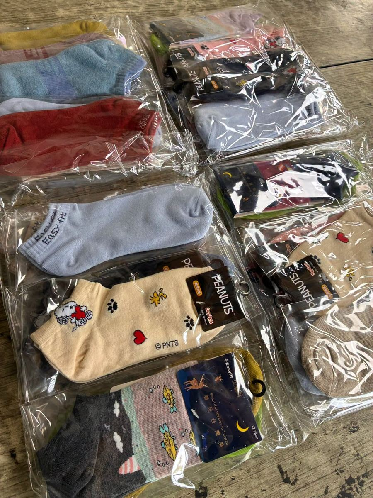

Hsinmin Elementary received a heartwarming gift this summer! The Changhua County Federation of School Parents' Associations visited our campus to donate a batch of "filial piety socks" — a gift full of love and good wishes.

- Changhua County Federation of School Parents' Associations｜彰化縣各級學校家長會聯合會
- Chairman Hsu Yu-Chung｜理事長 許友忠
- Director Chang Gao-Hua｜張理事 張高華
After the new semester begins, this gift of love will be passed on through the children's own hands — to their beloved grandparents. It's a chance to encourage students to express their affection out loud and show their care in a real, tangible way.
A pair of socks may seem small, but it carries a big lesson: that love is meant to be spoken, and gratitude is meant to be shown. 🧡
一雙襪子，傳遞一份溫暖的心意
感謝彰化縣各級學校家長會聯合會，由許友忠理事長、張高華張理事率同仁蒞臨新民國小，致贈「孝親襪」一批，將這份充滿愛與祝福的心意送到我們手中。
我們會將這份愛的禮物，於開學後透過孩子們的小手，轉送給親愛的爺爺、奶奶，外公、外婆，鼓勵孩子們學會把愛說出口、把心意表現出來。
Words About Kindness & Family英語學習角 · 和關懷與親情有關的小單字
Six key words — tap 🔊 to listen, then try the conversation and quiz.
六個關鍵字，點 🔊 聽發音，再試試對話和小考。
情境：兩位同學聊起要送給祖父母的襪子。